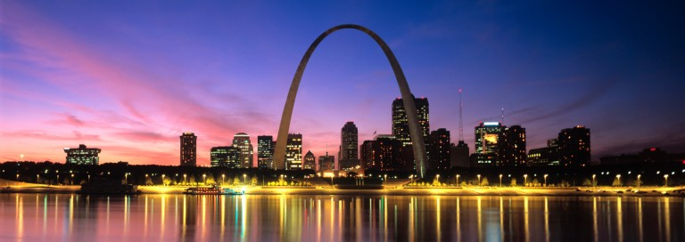

Washington University has grown to be a world-class research university with our roots firmly in St. Louis.

We have come together throughout our mutual history, creating benefits and opportunities for everyone in the community.
St. Louis is a national hub for important research and business development, especially in the fields of biotechnology and plant science. Today, engineers, scientists, business leaders, educators, artists and other innovative and creative professionals here are working at the forefront of a multitude of fields and endeavors.